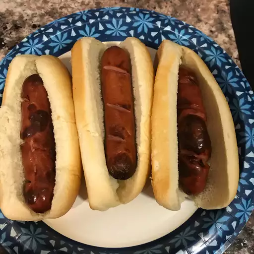

Basic Air Fryer Hot Dogs

These air fryer hot dogs in toasted buns turn out perfectly crisp in minutes with the help of your air fryer. Top with ketchup, mustard, relish, chili, or condiments of choice.
Ingredients
- 4 hot dog buns
- 5 hot dogs
Directions
- Preheat an air fryer to 400 degrees F (200 degrees C).
- Place buns in a single layer in the air fryer basket; cook in the preheated air fryer until crisp, about 2 minutes. Remove buns to a plate.
- Place hot dogs in a single layer in the air fryer basket; cook for 3 minutes. Serve hot dogs in toasted buns.
Recipe Source